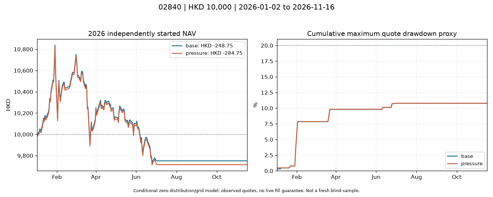
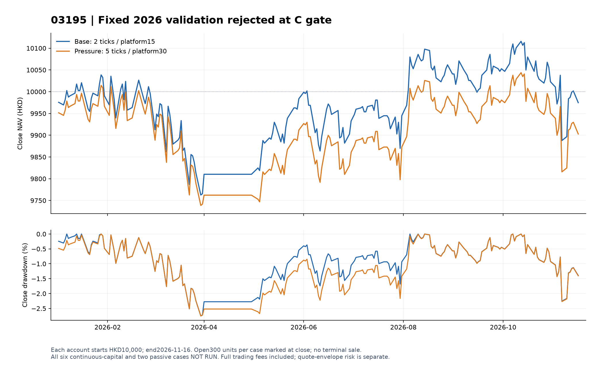

研究进展与证据
港股账户研究
看清当前做到哪一步，也保留没有通过的结果。
正在读取同步时间
正在读取研究快照…
本轮焦点
样本首日中位涨跌
首日上涨只数
首日破发只数
阶段来自最近一次同步。快照超过15分钟后停止活动动画；刷新不会启动回测或交易。
已验收与待验收
基础 / 压力成本分别列示历史与前向分别看
03086 · 历史正额的时间分布：82完整月中，两档成本均有24负月。月净值变化中位122.65／90.67港币。

2020年至2026年10月为完整月，2026年11月截至13日为部分月。5笔闭合、1笔开放；净值变化含浮动估值和已计分派，没有提款计划。
IPO · 配售依赖压力：重费暖市净额中位，原独立抽签约+1,287，同月／全局共秩约−1,768／−2,238港币。

每只新股潜在获配边际计数不变，仅重排跨事件路径秩。两例不是现实相关估计或通用最坏界，模拟比例不是未来盈利概率。全部模型尾款在2026年10月27日结清。
02840 · 一万港币独立2026年起账，两成本净亏。连续2025年7月至2026年11月虽为正，固定条件仍未通过。

2026零分派为条件推断；回撤是观察报价代理。每案仅1个闭合回合，不是稳定副业或新盲测证明。
03195 · 固定2026后续段，两成本均未通过净正门槛。六个连续资金案及两个被动参考按协议未运行。

开发与后续段各自起账，收益不能相加。终点是持仓估值，没有假设成交卖单。

曲线属于已见历史。压力灰线为首次未买到后的现金，不能当作已投资市场的零收益；终点持仓按收盘标记。
| 假设账户 | 当前标记权益 | 前向增减 | 持有份数 | 已闭合 |
|---|
这些假设账户的收益不相加为同一实投账户。系统不连接私人持仓，也不自动下单。
研究记录
下载本次快照 ↓记录包含开发、来源核对和参考检验；同一策略的多个版本不增加独立样本。早期归档保留原结论日期。